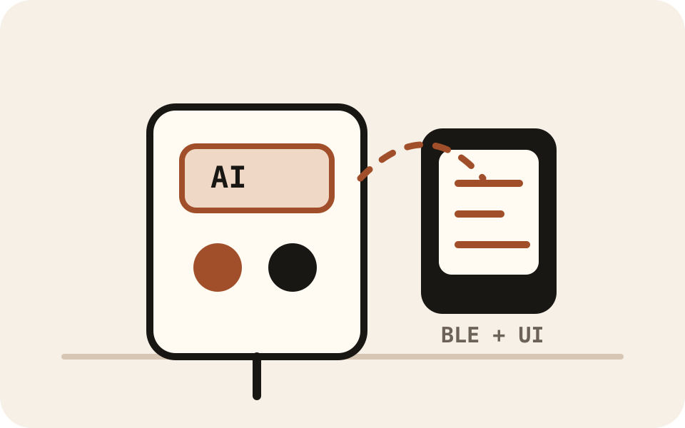

NuChef — AI Culinary Assistant
A full-stack physical computing project connecting an ESP32 dispenser, BLE bridge, backend service, and Unity/Quest interface into an interactive culinary assistant.
- ESP32
- BLE
- Python backend
- Unity
- LLM planner